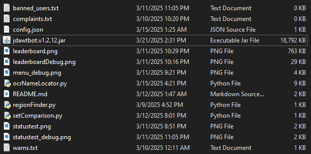

Most recent update as of push date
This contains all the necessary files to set up and run the bot. jdawtbot contains around 1600 lines of code, and on my PC consumes about 2% CPU and 60MB allocated heap at peak usage.
Creation
A chat bridge is a popular tool for Minecraft servers, it allows users from Discord to talk to players in-game. A chat bridge on Minecraft is no easy feat, but unlike War Thunder, Minecraft has APIs and plugins. I had to be the first to figure out how to interact with the game, how to get data from its undocumented ports, how to write to it. The discord side of things was relatively easy, as JDA (Java Discord Api) is well documented and used, but along with that came other issues of managing threads and preventing breakdown of the program and creating safeties and checks. Since War Thunder doesn't have APIs or support external plugins, I had to define how to send messages to the game posing as a player, and do other functions autonomously, as well as create commands for moderators on Discord to watch the players and make sure they behave and step in if needed. This of course was only a small small part of the whole bot, there are many other features.